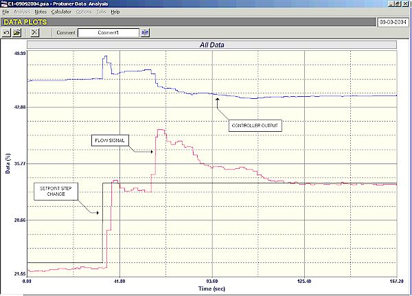
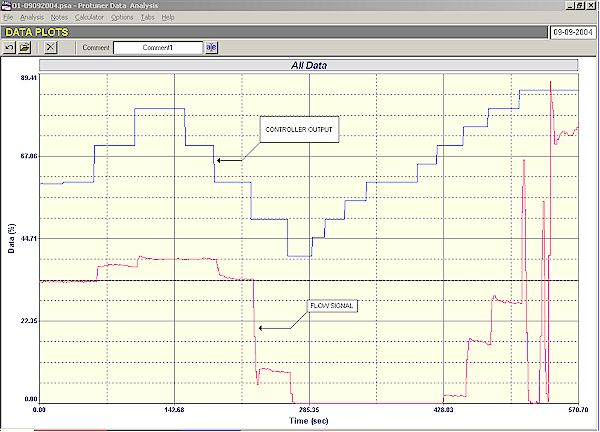
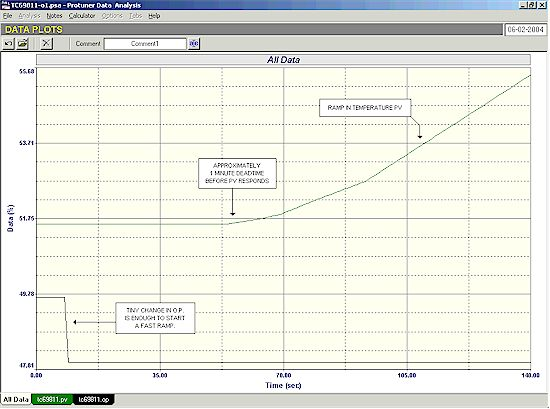
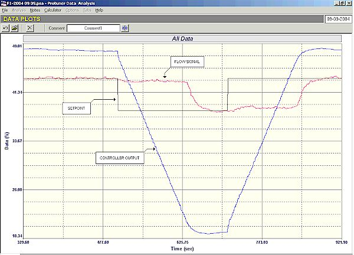
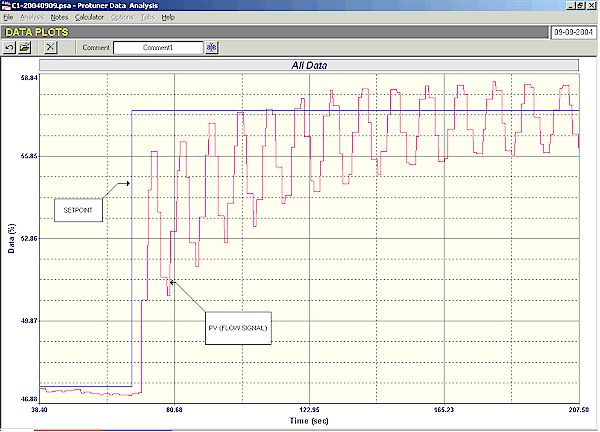
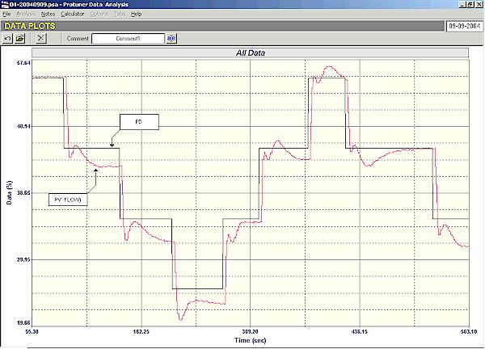

|
| [Home] [About us] [Contact us] [Training] [Optimisation services] [Protuner] |
| [Loop signatures] [Case histories] |
|
CONTROL LOOP CASE HISTORY 81 GOOD CONTROL REQUIRES OBEDIENT VALVES A feedback controller effectively calculates the amount of product that is required to be fed into the process. If for example the output (process demand - PD) of the controller is sitting at 50%, the controller is asking for a flow into the process of 50%. The process demand signal is fed to the control valve whose effective job is to "translate" this signal into a physical flow of the amount required. It stands to reason that the control can only be as good as the valve is capable of complying with the controller's demand signal. As has been shown many times in this series of articles, the vast majority of problems encountered in feedback control loops are caused by valves. This article shows three interesting examples of severe control problems caused by valve problems. The examples are taken from work recently undertaken in a large metal refinery. Figure 1 is an "as found" closed loop test performed on an important flow loop. When the test was started it was seen that the flow was staying fairly constant, but with a small offset from setpoint. The output of the controller was hardly moving which would indicate the integral in the controller was far too slow.  Figure 1 A 10% setpoint change was then made and it can be seen how the flow overshot slightly and then stabilised below setpoint - again indicating poor tuning. However about 20 seconds later, the flow suddenly and most unexpectedly shot up almost instantaneously by about 5%. (The controller then took quite a long time to get it back down to setpoint). This jump was very strange as there was nothing in the process that could cause load changes of such a nature. The open loop test which was then performed and which is shown in Figure 2 is absolutely amazing.  Figure 2 As seen in the figure, the first two steps upwards are of different size, which could indicate non-linearity or possibly process saturation. The valve did not move on the first step in the reverse direction even though the PD moved by 10%. This would indicate hysteresis of at least 10%. On the next step the valve moved in a reasonable fashion. However on the following step it gave a huge movement with some overshoot. The next step down took the PD to 40%. However at this point the flow reached zero, which would indicate that the valve stroking was completely wrong. The PD was then reversed again to open the valve. However nothing occurred until the PD got up to 70%. This would now indicate a whopping valve hysteresis of 30! Two further steps on the PD were made on which the valve seemed to move reasonably. However on the following step the valve suddenly went completely crazy, opening and shutting. The test was abandoned at this point. It is completely impossible to try and control with a valve like this. I always find things like this absolutely amazing. How could plant personnel not be aware that they have a problem valve like this? How did they manage to control this loop before, even in manual? I was told that it was an important loop. The second example is also a flow loop where the control was supposed to be of critical importance. Figure 3 shows the open loop test. It can be seen that on each reversal the PD had to be moved a great amount to try and get the valve to also reverse. Analysis of this uncovered a valve hysteresis of over 25%. (A general rule is that a maximum of 1% hysteresis is acceptable for valve with positioner).  Figure 3 The test also revealed from an examination of the relative step sizes of process variable and PD, that the valve was over twice oversized. (Control variance deteriorates directly proportionally to the amount a valve is oversized). The effect of hysteresis is that the PD has to move back right through the hysteresis band before the valve will start moving in the reverse direction. This results in the control being slowed right down and leads to increased control variance. With a 25% hysteresis and a valve that is over twice oversized, one would expect very poor control out of the loop, and this is exactly what was encountered in the final and very interesting closed loop test, part of which is illustrated in Figure 4. Small 5% setpoint changes were made first down and then up. It can be seen how the flow stayed constant with the valve "stuck" until the PD has reversed through the 25%. It took 2 minutes, 15 seconds, to reverse the valve on each setpoint change!  Figure 4 The third example is of a flow loop that was unstable. Figure 5 shows the closed loop "as found" test.  Figure 5 The flow looked fine at the start of the test. However as soon as a setpoint change was made the loop went unstable. People often enquire as to why it wasn't unstable before the setpoint change was made. The normal reason for this is that operators in many plants very frequently, if not even normally, make changes in manual. They then place the controller in Auto after the change has been effected, and the process has settled out. The process is then likely to stay where it is, provided everything is steady, and the loop may not start cycling until a further setpoint or a load change occurs. Once again how was it that nobody in the plant was aware that an important control loop like this was operating in this fashion and was quite likely to go unstable at any moment? Figure 6 is the open loop test on this loop. It shows the very cyclic response of the valve on each step. Such a response is probably due to a positioner problem. Modern smart positioners very often contain their own internal P + D controllers which if not properly tuned can cause overshoots, or exhibit cycling that can often lead to unstable loop behaviour as seen here. Unfortunately time did not permit further investigations to be undertaken at the time these tests were performed.  Figure 6 I believe these examples once again illustrate how important it is that the valve does what the controller wants, if good control is to be achieved. Michael
Brown is a specialist in control loop optimisation, with many years of
experience in process control instrumentation. His main activities are
consulting, and teaching practical control loop analysis and
optimisation. He gives training courses which can be held in clients'
plants, where students can have the added benefit of practising on live
loops. His work takes him to plants all over South Africa, and also to
other countries. He can be contacted at:
|